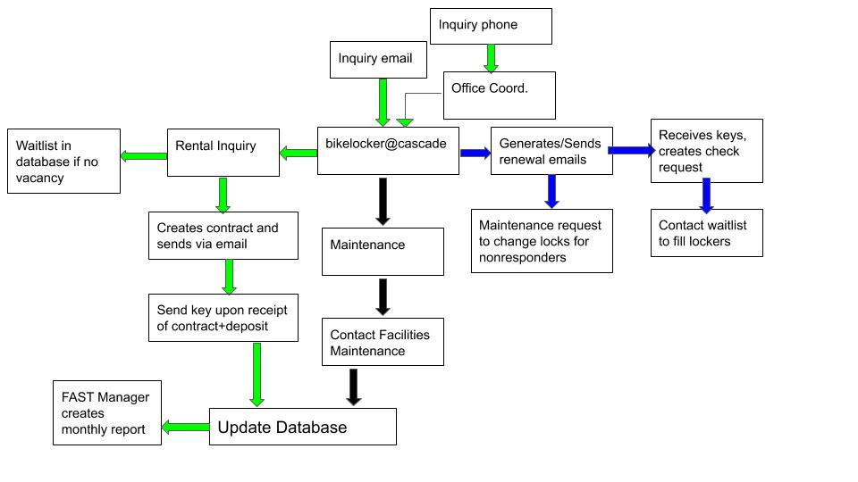
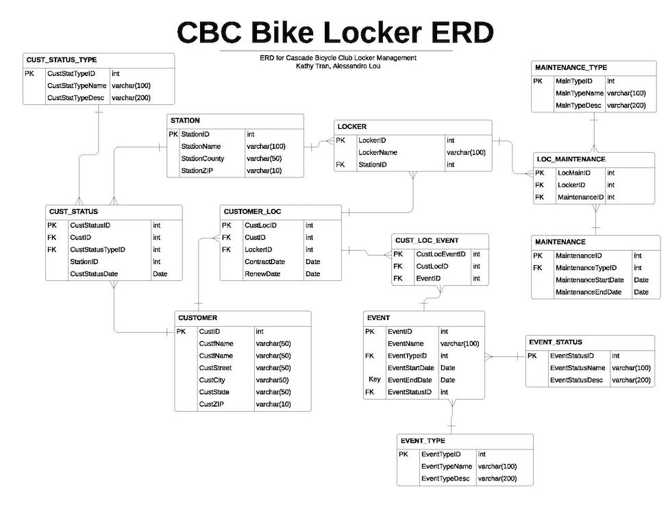
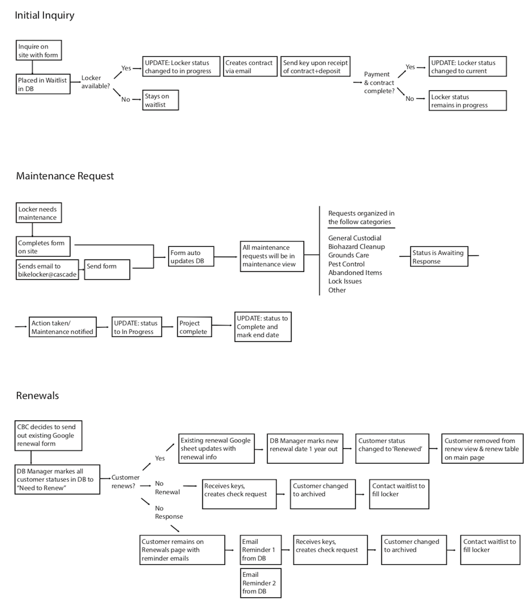

"We wanted to share our 18-week journey with everyone. As a team, we felt that the adventure that our capstone project brought us was as compelling to share along with our final product. Unlike previous years, our class worked remotely on our projects due to COVID-19. Our team learned how to adjust and emphasize in troubling times together and grew as a whole by the end of our time. We wanted to acknowledge and thank the teaching staff - Marlina, and Yash, and our sponsors - Stephen and Christopher, for continuous support and encouragement as we worked through unprecedented times." - Diversity Dawgs
The original scope of the project was broad and had multitudes of layers that soon led to us reevaluate the task on our hands with our sponsor. The original scope required a fully automated process of all workflows of the leased lockers including renewals, new inquires, and payment. After further investigation, our team learned that the current workflow was being conducted in a very manual approach by relying solely on Excel spreadsheets for their database needs and GSuite tools for all customer service needs. Below illustrates the manual workflow that our stakeholders used to manage customers and do any business-related reporting.
From the original scope of building a fully automated work process and a web application, we targeted building a strong foundational basis for our sponsor to eventually reach their goal. We built a foundational basis by creating a database and automating certain work processes such as inquiries and maintenance updates. We also built a webpage where end users can inquire about a locker through a form online. Our goal was to start the conversation in modernizing and automating the bike locker management system.
Our project had two main mediums in how we were addressing the goal at stake. Due to this, we designed for two main groups of stakeholders - Cascade Bicycle Club employees and end-users. Although the applications they would be using were different, as a team we wanted to streamline the experience and create trust and initiate users to adapt to our new solution. In order to achieve this, we relied on our three main design principles which were; simplicity, familiarity, and security.
This was our acknowledgment that we were dealing with a wide range of users and that meant not everyone was comfortable with our solution. It was also recognizing that we were taking a manual work process and automating it, with a change there was a clear benefit in being clear and obvious than ascetically pleasing.
Our technological solution is an aid, not the whole experience, whether that is for the employee or end-users. We placed great emphasis on doing multiple inquires to understand how our CBC user conducted his current work processes to be able to build a solution that aided but not replaced his experience. We focused on practicing empathy and understanding of different users and how their experience alters due to our solution.
Our team was dealing with information that is considered PII (Personally Identifiable Information) which meant privacy and security were primary concerns when building our solution. Information presented was to be transparent and untroublesome if needed to change and only accessible by those who had the security credentials.
You can see aspects of our main design principles hidden throughout our project. Different areas of the project may have applied one principle in a different manner than others, but nonetheless each decision was made in the thought of the user and their experience.
After our first sponsor meeting, our team concluded that the current system that Cascade Bicycle Club had was not sufficient enough to build a web or mobile application. In order to begin automating work processes, we needed to build a robust foundational database that could ensure data integrity and security. The development team conducted a cost-benefit analysis and discussing with industry experts, a relational database was chosen to be built on Django. The reason for choosing a relational database for Cascade was due to the many different entities that were to be kept track of in their business processes. This included customer information, locker information, locker station information, and more. By following a relational schema with the data, we are able to uphold accuracy and integrity and ensure that data is not duplicated or stored in multiple places. Because of this, the data is also flexible and queries involving one or multiple entities are made easy. An RDMS was chosen for these reasons and because of its scalability, which aligns with CBC’s goals beyond this project.
As database development began, our team was also equipped with the challenge of solving a technical problem with a solution that non-advanced technical users could sustain. Our developers spent extensive time strategizing and implementing all use cases for the work processes in order for our database to be durable and adaptable for its business use. There were aspects such as legal document signatures and payments that we could not automate, however, we designed the new work process to integrate both its technical and static components to work in harmony. You can see the newly created workflows below:
As mentioned prior - our main stakeholder was a non-advanced technical user. In order for the experience with the database to be painless, our developers developed a user-friendly dashboard that culminated all the needed business information for our user. The dashboard design was inspired by excel sheets used in the previous workflows, by bringing familiarity into the new process we hoped for a smoother and effortless transition.
In order to modernize and automate how Cascade Bicycle Club and its end users communicated, we built and deployed a new landing page. The major goal with this was to allow users to find a locker location on an interactive map and allow them to sign up for it through a user-friendly form. Currently, users have to filter on the King County website to find a locker location. After exploring the King County Metro platform, as users, we felt confused and frustrated with how information was being portrayed. This became our main inspiration for building a page that was simple yet informative. In order to give ownership of the information to the club, we gave full reign to our sponsors to dictate how the page was written. Our page is just the beginning steps in automating the communication with end-users, but nonetheless a very important one.
To ensure an effective handoff of our solutions detailed above, we created a knowledge transfer manual of how to use the backend database and the frontend website. Our manual is written in a manner that is easy for new technical users to understand, and so that a user with not much technical knowledge can feel confident running through the full capabilities of our technical solution. One way we achieved this is by creating and documenting a Cascade Bicycle Club customer lifecycle. The stages include, Reach, Acquisition, Conversion, Retention, and Cancellation. In our manual, we showcase the various work processes that align with the customer goal in each customer stage, using step-by-step written procedures, photos, and video tutorials. We also include information on database maintenance, a glossary of technical terms, and outlining the next steps for the completion of the automation of the customer-facing web application. Our manual, designated for an audience of beginner technical users, ensures that all audiences will have a good baseline understanding of the technical solutions, and handoff facilitation of the project in the future will run more productively.